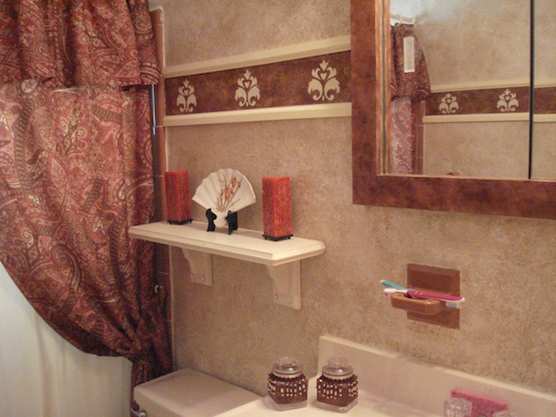
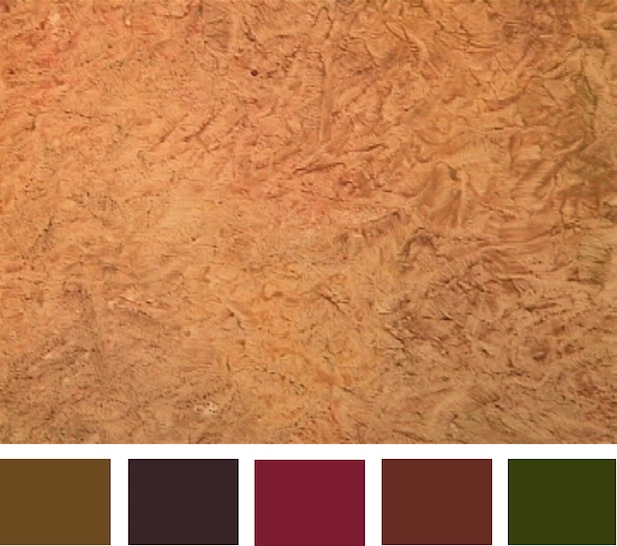
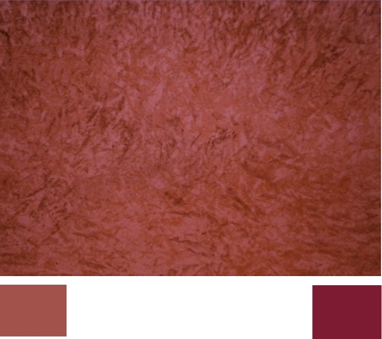
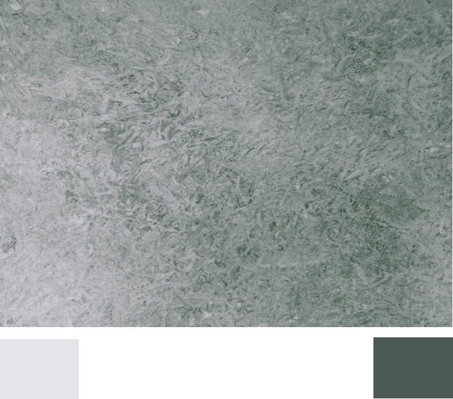
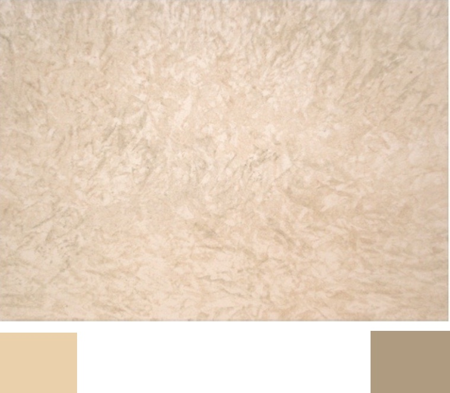
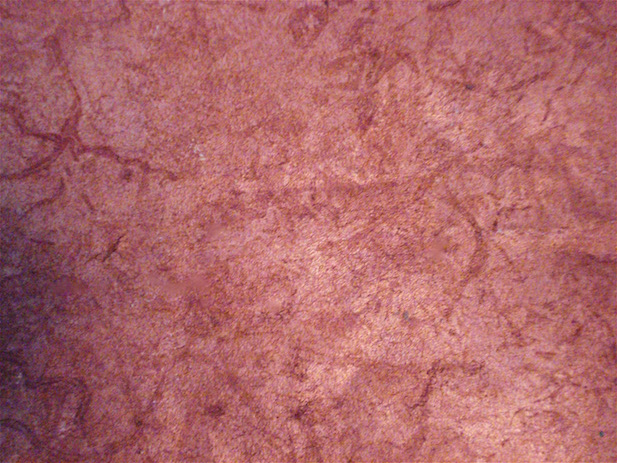

Now you can learn to faux paint this popular faux finish known as “ragging” in less than half the time that other methods take.

In this bathroom we ragged on 3 different colors to match all the colors of the fixtures in the room. A great tip is to buy all your accessories first, then match the colors for the glazes you will use on the walls.
Most faux painting methods require you to hold the rag in your hand. Not only is it messy, requiring the use of gloves, but it can get quite tiring on the hands after awhile. To add more than one color, the steps must be repeated. However, using the Tuck and Gather tool, your hands are not holding the rag directly. You don't have to hold the rag, crumpled, in your hand. You tuck the rag onto the tool and then press it on to the Multi Color Faux Palette that holds all the color glazes you are using. Both are included in the Basic Faux Painting Kit.

Our BASIC KIT INCLUDES Multi Color Faux Palette, 2 Poofy Pads, 2 Tuck and Gather tools and our Faux Painting Workshop DVD.
For a limited time, it's on sale for only $39.99. With the Basic faux painting kit, you will learn Ragging and 9 other faux finishing techniques like Old World Parchment, Color Washing, Faux Brick, Stone, Sponging and even how to paint Clouds on ceilings!

You will also receive, FREE of charge, a Faux Painting Color Suggestions and Idea E-book-book. A great help in choosing your faux painting colors.
Using colors that are contrasting makes for a more dramatic textural look whereas using colors in the same family gives a more subtle effect on your wall.
Take a look at the suggestions for color schemes below. With the Triple S Faux System © , the sky is the limit when it comes to adding texture to your walls with the added blessing of saving money on expensive plaster glazes.

The base coat here is white. There are five colors ragged on top.

The base coat is a dark flesh color with a burgundy color ragged on top.

The base coat is white color (left of pic) with dark green ragged on top.

The base coat is a dark beige color with a darker tan color on top.
Get even more dimension by color washing your wall first, then after it is dry, use the Tuck and Gather tool with a rag to add texture in the same colors. See the pictures below to see how enhanced the look of texture is.



(Includes Basic and Faux Marble Kit)
*Free Priority Shipping and E-book